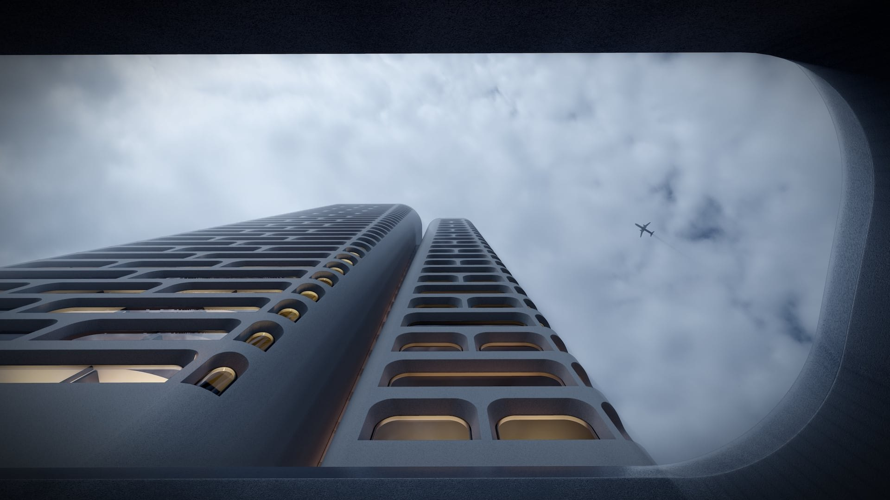

Shijiazhuang, Hebei
Hyatt Regency Shijiazhuang
H2 project archive · 2021
Hyatt Hotels Corporation
All work
Garden urban hall, Create a dynamic modern luxury hotel which is quiet and private
The design integrates shijiazhuang’s open and inclusive culture, and relies on art aesthetics and high-quality contemporary technology to create a dynamic modern luxury hotel.
Breaking through the inherent boundaries of the hotel, the block style hotel public area is designed to create a unique open urban living room experience. Garden courtyards of different sizes connect the hotel functions to maximize the use of the urban landscape. It’s the perfect place for local elites and visitors to spend quality time together. The tower is designed from low to high, combined with the scattered podium, to create a rich city skyline and highly recognizable tower image.
- Location
- Shijiazhuang, Hebei
- Year in source archive
- 2021
- Hotel group in archive
- Hyatt Hotels Corporation
The year is the year stated in the original archive, not a verified completion date. The source may include design-stage imagery. Current naming, status, precise scope and image credits require confirmation before official publication.